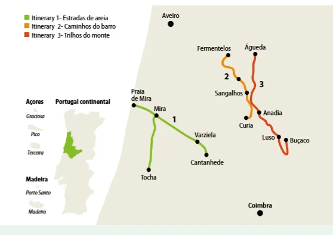
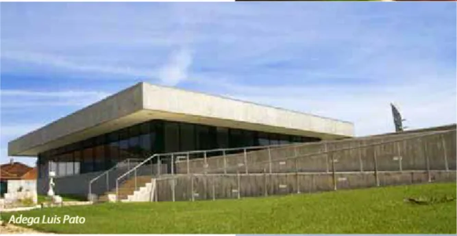

Chapter 4 · The Portuguese wine regions
Bairrada Wine Region
Key figures (2022)
Viticultural area: 13,391 ha
Total Production: 20,208,000 litres
History
Wine production in the region dates back to Roman times, as evidenced by the wide variety of wine presses hewn out of the granite rock (anthropomorphic wine presses) where wine was produced during this period. Documented evidence of wine production dating to the 10th and 11th century has been discovered. The tradition of these wines dates back to the reign of D. Afonso Henrique, who authorized the planting of vineyards in the region on condition that he received one-quarter of the wine they produced. As early as during the reigns of D. João I and D. João III, measures were taken to protect the wines from this area of the country, given their excellent quality and social and economic importance. The official borders of the Bairrada were established in 1867 by António Augusto de Aguiar.
Terroir
Climate Köppen-Geiger classification: Csb. MCC System indices (Tonietto
& Carbonneau 2004): heliothermal index (HI): +1, cool night index (FI): +2, dryness index (DI): +1. Corresponds to a humid temperate climate with a dry period in summer. The winters are long and cool, the summers hot, tempered by the winds from the east and north-east dominant in those regions closer to the sea. The climate is a Mediterranean Atlantic one. Given its flatness and proximity to the ocean, it enjoys a temperate climate with an extremely strong Atlantic influence, with frequent rains and mild average temperatures. There are frosts at the beginning of spring with adverse weather conditions for the flowering period and a risk of hail in May. The whole region is subject to Atlantic sea winds and relative humidity, resulting in a high risk of infection with cryptogamic agents.

Vineyard elevation: The vineyards are at an elevation of between 40 and 120 metres.

Rainfall: 900–1,100 mm.
Geology: The region stretches from the coast to the Caramulo and Buçaco mountains. Extending from the Minho to the Alta Estremadura, it is a region of predominantly intensive agriculture, with a variety of crops grown on small parcels of land, where the vine occupies pride of place and the quality of its wines justifies the recognition that DOC Bairrada bestows upon them. The soils come from various geological eras, but are predominantly poor. They are primarily divided between calcareous clay terrain and long sandy bands, constituting a wide variety of soil types, depending on which element is predominant. Vines are cultivated mainly in clay or calcareous clay soils. For the most part, the region is flat, with vineyards seldom situated at elevations higher than 120 metres. Forming of a strip along the coast with a high population density, rural property is divided into thousands of small parcels, with the average area of vine cultivation rarely exceeding one hectare of vines, thus favouring the presence of large cooperative cellars and large winemaking companies as well as a number of producers-bottlers who are a credit to the region. The viticultural land of the Bairrada region was one of the first regions in Portugal to adopt and develop sparkling wines, given that the region’s cool, humid climate with its strong maritime influence favours its production, yielding grapes with a low alcohol but high acid content, both essential factors in the making of sparkling wine. de Coimbra, Benacanta (“Coimbra
Types of wine produced
Beira Atlântico IG or Beira Atlântico
regional wine: White, rosé, red, sparkling, semi-sparkling, Terras de Sicó subregion
Bairrada DO wines (VQPRD): Red, red “Classico”, white, rosé. Bairrada DO sparkling wines (VEQPRD) Aguardente Bagaceira (grape marc spirit)
Regional contacts
Technical information:
Certification authority: Conselho Vitivinícola Regional das Beiras (RegionalVitivinicultural Council of the Beiras), Av. Eng.º Tavares da Silva, 3780-203 ANADIA, Tel.: 231 510 180 –

Website: www.cvbairrada.pt e-mail: info@cvbairrada.pt Cultural information on the wine of
the region: Confraria dos Enófílos da Bairrada (Confraternity of Oenophilists of Bairrada), Estação Vitivinícola de Anadia (“Anadia Vitivinicultural Station”), Tel.: 231 510 330 e-mails: confrariabairrada@sapo.pt; Museu do Vinho da Bairrada (Bairrada Wine Museum), Av. Eng.º Tavares da Silva, 3780-203 ANADIA, Tel.: 231 519 780, e-mail:museuvinhobairrada.m.anadia @gmail.com Institutions of higher learning and
viticultural research: Escola superior
College, Benacanta”) – S. Martinha de Bispo 3040-316 COIMBRA, www.esac.pt.; Estação Vitivinícola de Anadia (Anadia Vitivinicultural Station), Apartado 7, 3781-907 ANADIA; Tel.: 231 510 180
Site: http://www.cvbairrada.pt, e-mail: info@cvbairrada.pt
Certification authority: Conselho Vitivinícola Regional das Beiras (Regional Vitivinicultural Council of the Beiras); Comissão Vitivinícola da Bairrada (Bairrada Vitivinicultural Commission) ; Av. Eng.º Tavares da Silva, 3780-203 ANADIA – Tel.: 231 510 180 Fax: 231 510 189;
Website: www.cvbairrada.pt e-mail: info@cvbairrada.pt
Enotourism information: Bairrada Wine Route, situated in the Anadia municipality; Tel.: 231 510 180,
Website: www.cvbairrada.pt Producer and bottler information http://www.ivv.min-agricultura.pt/ np4/1736.html,
Yearbook 2011, pages 158-160. www.cvbairrada.pt
Varieties authorised for IG Beira Atlântico as a regional wine
Legal basis: Ministerial Order N.º 238 – A/2011, Decree-Law N.º 212/2004, Reg. (EC) N.º 1234/2007 (as amended by Reg. (EC) N.º 491/2009).
Red wines: Água Santa, Alfrocheiro, Alicante Bouschet, Alvarelhão, Aragonez (Tinta Roriz) Baga, Bastardo, Cabernet Franc, Cabernet Sauvignon, Caladoc, Camarate, Campanário, Castelão, Cidreiro, Cinsault, Coração de Galo, Cornifesto, Espadeiro, Gamay, Grand Noir, Jaen, Malvasia Preta, Marufo, Merlot, Monvedro, Moreto, Petit Verdot, Pilongo, Pinot Noir, Português Azul, Rabo de Ovelha Tinto, Rufete, Sousão, Syrah, Tannat, Tinta Barroca, Tinta Carvalha, Tinta Francisca, Tinta Muída, Tintem, Tinto Cão, Touriga Fêmea, Touriga Franca, Touriga Nacional, Trincadeira (Tinta Amarela), Vinhão, Xara, Zinfandel, Alvar Roxo, Folgasão Roxo, Gewürztraminer, Malvasia Fina Roxa and Pinot Gris.
White wines: Alicante-Branco, Alvar, Alvarinho, Arinto (Pedernã), Arinto do Interior, Assaraky, Azal, Barcelo, Bical, Branca de Anadia, Cercial, Chardonnay, Chenin, Códega do Larinho, Dona Branca, Encruzado, Fernão Pires (Maria Gomes), Folgasão, Folha de Figueira, Fonte Cal, Godelho, Gouveio, Jampal, Loureiro, Luzidio, Malvasia Fina, Malvasia Rei, Pinot Blanc, Rabo de Ovelha, Riesling, Sauvignon, Semillon, Sercial (Esgana Cão), Sercialinho, Síria (Roupeiro), Tália, Tamarez, Terrantez, Trajadura, Uva Cão, Verdelho, Verdial Branco, Viognier, Viosinho and Vital.



Prestigious wineries
in the region: Aliança – Vinhos de Portugal, S.A.
Part of “José Berardo’s wine group”, with wineries in all of Portugal’s best wine regions, Aliança manages around 600 hectares of vineyards, including Quinta dos Quatro Ventos, Quinta da Garrida, Quinta da Terrugem and Quinta das Baceladas. More than 50 per cent of Aliança’s production is exported. This company represents the combination of Bairrada’s great wine tradition with traditional underground cellars and modern cultural artefacts with its own underground museum. Sociedade Agrícola e Comercial dos Vinhos Messias, S.A. 6,000 square metres of facilities and approximately 160 hectares of vineyards, 4 properties with vineyards in the Dão region. (Messias has another 200 hectares in Ferradosa, in the Douro Valley. This winehouse has a full range of wine products from the best Portuguese regions and its own Quintas.

Adega Luís Pato (in Amoreira da Gândara) Luís Pato, known in the wine world as the “rebel winemaker”—whose emblematic duck on his branded wines tells you the meaning in Portuguese of his surname—is a pioneer. In the 1970s, he was the first private bottler of wines from the Bairrada Demarcated Region
and became a leader in wine exports and carving out a new image for Portuguese wine internationally. Adega Cooperativa de Cantanhede,
C.R.L. Osvaldo Amado is the famous head winemaker of this cooperative winery which has won more awards than any other in Portugal. Its 500 members collectively produce 6–7 million kilograms of grapes annually. Quinta do Encontro – Sociedade Vitivinícola, Lda. (Global Wines S.A.) Caves São João
Campolargo Vinhos, Anadia.